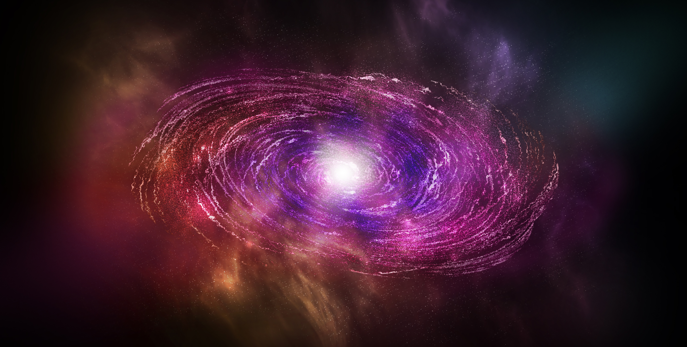

The Big Bang Theory stands as the prevailing scientific explanation for the origin and evolution of the universe. It posits that the universe began as an infinitely dense and hot singularity nearly 13.8 billion years ago. However, many mysteries surrounding this cosmic event still remain. Scientists are embarking on a journey of discovery, delving into the depths of space and time to unravel the secrets hidden within the fabric of the universe and shed light on the fundamental questions of our existence.
Through meticulous observation and advanced theoretical models, astrophysicists are piecing together the puzzle of the early universe. They study the cosmic microwave background radiation, the faint afterglow of the Big Bang, which provides crucial clues about the conditions prevailing during the first moments of cosmic existence. By examining the fluctuations in this ancient radiation, scientists can explore the distribution of matter and energy, leading to a deeper understanding of the birth of galaxies, stars, and ultimately, life itself.
Cutting-edge technologies and sophisticated instruments have revolutionized our ability to explore the cosmos. Telescopes, such as the Hubble Space Telescope and the Atacama Large Millimeter/submillimeter Array (ALMA), enable astronomers to peer into the depths of space, capturing images and data from the far reaches of the universe. These powerful tools have allowed scientists to study distant galaxies, cosmic structures, and cosmic inflation, providing insights into the early moments of the universe and shaping our understanding of the Big Bang Theory.

As our knowledge of the universe expands, so do the questions. Scientists are striving to unravel the mysteries of dark matter and dark energy, two enigmatic components that make up the majority of the cosmos. These elusive entities hold the key to understanding the fate and structure of the universe. Through ongoing research, experiments, and theoretical breakthroughs, we are steadily unveiling the secrets of the Big Bang Theory, uncovering the origins of our universe and pushing the boundaries of human knowledge to new frontiers. The quest to comprehend our cosmic beginnings continues to ignite curiosity and inspire scientists to explore the grandest of scales, revealing a universe filled with wonders waiting to be discovered.